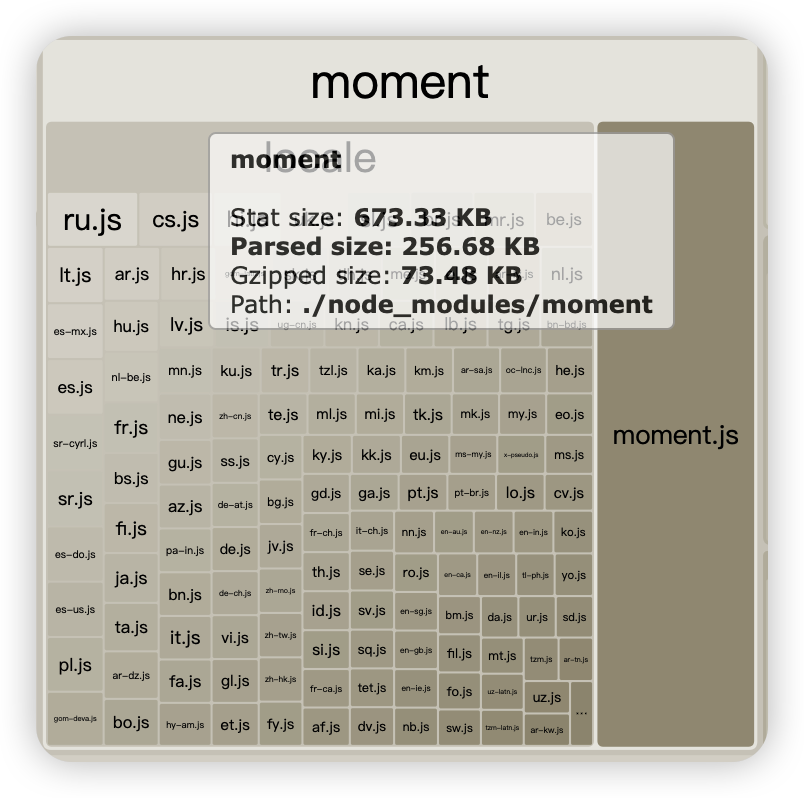
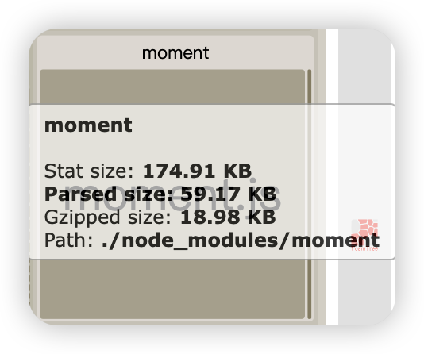

![]()
moment.js默认是携带18国语言，国际化的，实际项目中我们并不需要，无用的语言包侵占了许多空间，我们可以通过ContextReplacementPlugin插件来优化。
在build/webpack.prod.conf.js中写入以下配置。
const webpackConfig = merge(baseWebpackConfig, {
plugins: [
new webpack.ContextReplacementPlugin(
/moment[/\\]locale$/, // 这个参数表明了我们要改变的打包上下文
/zh-cn/ // 这个参数表示我们只想打包这个正则匹配的文件
)
]
})
module.exports = webpackConfig
下面是优化前后的对比
优化前256.68kb 
优化后59.17kb
